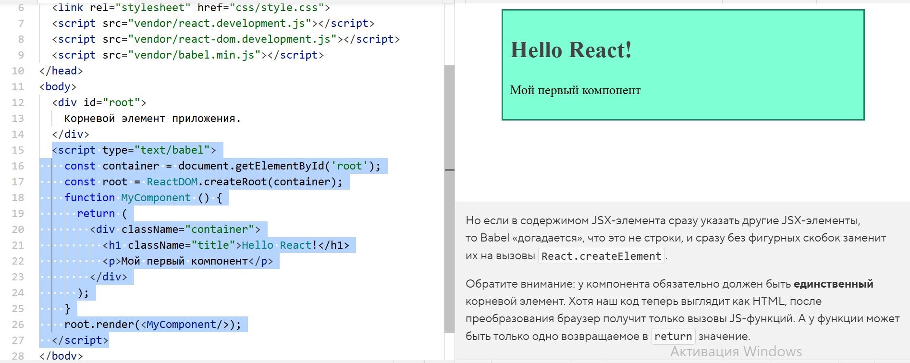

Но если в содержимом JSX-элемента сразу указать другие JSX-элементы, то Babel «догадается», что это не строки, и сразу без фигурных скобок заменит их на вызовы React.createElement.
Обратите внимание: у компонента обязательно должен быть единственный корневой элемент. Хотя наш код теперь выглядит как HTML, после преобразования браузер получит только вызовы JS-функций. А у функции может быть только одно возвращаемое в return значение.
